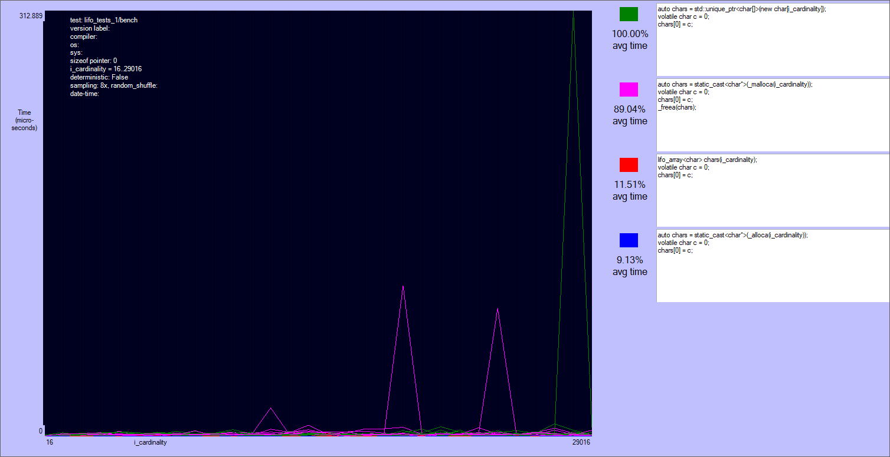
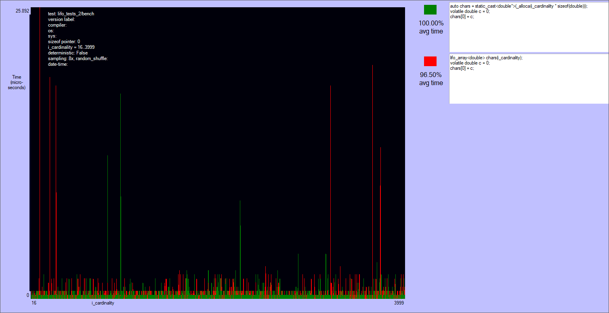

Benchmarks of lifo_array
In this tests lifo_array is compared with a legacy heap array, the function _alloca, and the function _malloca (a Microsoft-specific safer version). A comparison with std::vector wouldn't be fair because std::vector value-initializes the elements even if they are pod types, while lifo_array doesn't.
The benchmark is composed by two tests:
- An array of
floats is allocated, the first element is zeroed, and then the array is deallocated.
- An array of
doubles is allocated, the first element is zeroed, and then the array is deallocated. This test is an head-to-head between alloca and lifo_array.
Summary of the results
All the tests are compiled with Visual Studio 2017 (version 15.1), and executed on Windows 10 with an int Intel(R) Core(TM) i7-7700HQ CPU @ 2.80GHz, 2808 Mhz, 4 cores, 8 logical processors. The benchmarks of the whole library are shuffled and interleaved at the granularity of a single invocation with a given cardinality, and every invocation occurs 8 times.
The results are quite noisy: there are two separate classes of players, but no clear winner in each of them.
_malloca is roughly the same to the array on the heap (actually many times it's slower). The reason is that this function allocates on the heap sizes bigger than 1024 bytes, and the tests allocate up to 30-40 kibibytes. Note that _malloca needs a deallocation function to be called (_freea), and that it can still possibly cause a stack overflow, though much more rarely than alloca.alloca and lifo_array are very close, with the first being ~80% of times slightly faster if the size an element is not a multiple of lifo_allocator::alignment (currently = alignof(void*)). Otherwise lifo_array can skip some ALU instructions that align the size of the block. I'm not sure that this is the reason, but this case it's often slightly faster than alloca. Anyway both alloca and lifo_array are very fast.
Generated code for lifo_array
Visual Stdio 2017 translates the source code of the first test:
lifo_array<char> chars(i_cardinality);
volatile char c = 0;
chars[0] = c;
to this x64 code:
lifo_array<char> chars(i_cardinality);
00007FF636BD8C5F mov rax,qword ptr gs:[58h]
00007FF636BD8C68 lea rdi,[rdx+7]
00007FF636BD8C6C and rdi,0FFFFFFFFFFFFFFF8h
00007FF636BD8C70 mov ebx,128h
00007FF636BD8C75 add rbx,qword ptr [rax]
00007FF636BD8C78 mov rdx,qword ptr [rbx]
00007FF636BD8C7B mov rcx,rdx
00007FF636BD8C7E and rcx,0FFFFFFFFFFFF0000h
00007FF636BD8C85 lea r8,[rdi+rdx]
00007FF636BD8C89 mov rax,r8
00007FF636BD8C8C sub rax,rcx
00007FF636BD8C8F cmp rax,0FFF0h
00007FF636BD8C95 jb <lambda_b8a4ec06313d93817536a7cf8b449dcc>::operator()+57h (07FF636BD8CA7h)
00007FF636BD8C97 mov rdx,rdi
00007FF636BD8C9A mov rcx,rbx
00007FF636BD8CA2 mov rdx,rax
00007FF636BD8CA5 jmp <lambda_b8a4ec06313d93817536a7cf8b449dcc>::operator()+5Ah (07FF636BD8CAAh)
00007FF636BD8CA7 mov qword ptr [rbx],r8
volatile char c = 0;
00007FF636BD8CAA mov byte ptr [rsp+30h],0
chars[0] = c;
00007FF636BD8CAF movzx eax,byte ptr [c]
00007FF636BD8CB4 mov byte ptr [rdx],al
}, __LINE__);
00007FF636BD8CB6 mov rax,qword ptr [rbx]
00007FF636BD8CB9 xor rax,rdx
00007FF636BD8CBC test rax,0FFFFFFFFFFFF0000h
00007FF636BD8CC2 je <lambda_b8a4ec06313d93817536a7cf8b449dcc>::operator()+89h (07FF636BD8CD9h)
00007FF636BD8CC4 mov r8,rdi
00007FF636BD8CC7 mov rcx,rbx
00007FF636BD8CCA mov rbx,qword ptr [rsp+38h]
00007FF636BD8CCF add rsp,20h
00007FF636BD8CD3 pop rdi
00007FF636BD8CD9 mov qword ptr [rbx],rdx
00007FF636BD8CDC mov rbx,qword ptr [rsp+38h]
The branch after cmp and the one after test skip the slow paths. They are always taken unless a page switch is required, or the requested block does not fit in a page (in which case the block is allocated in the heap). The branch predictor of the cpu should do a good job here.
Note that the first instructions align the size of the block to 8 bytes.
The source code of second test:
lifo_array<double> chars(i_cardinality);
volatile double c = 0;
chars[0] = c;
is translated to:
00007FF636BD907F mov rax,qword ptr gs:[58h]
00007FF636BD9088 lea rdi,[rdx*8]
00007FF636BD9090 mov ebx,128h
00007FF636BD9095 add rbx,qword ptr [rax]
00007FF636BD9098 mov rdx,qword ptr [rbx]
00007FF636BD909B mov rcx,rdx
00007FF636BD909E and rcx,0FFFFFFFFFFFF0000h
00007FF636BD90A5 lea r8,[rdx+rdi]
00007FF636BD90A9 mov rax,r8
00007FF636BD90AC sub rax,rcx
00007FF636BD90AF cmp rax,0FFF0h
00007FF636BD90B5 jb <lambda_c7840347498da9fa856125956fe6e478>::operator()+57h (07FF636BD90C7h)
00007FF636BD90B7 mov rdx,rdi
00007FF636BD90BA mov rcx,rbx
00007FF636BD90BD call density::lifo_allocator<density::basic_default_allocator<65536>,8>::allocate_slow_path (07FF636BD9220h)
00007FF636BD90C2 mov rdx,rax
00007FF636BD90C5 jmp <lambda_c7840347498da9fa856125956fe6e478>::operator()+5Ah (07FF636BD90CAh)
00007FF636BD90C7 mov qword ptr [rbx],r8
00007FF636BD90CA xorps xmm0,xmm0
volatile double c = 0;
00007FF636BD90CD movsd mmword ptr [rsp+30h],xmm0
chars[0] = c;
00007FF636BD90D3 movsd xmm1,mmword ptr [c]
}, __LINE__);
00007FF636BD90D9 mov rax,qword ptr [rbx]
00007FF636BD90DC xor rax,rdx
chars[0] = c;
00007FF636BD90DF movsd mmword ptr [rdx],xmm1
}, __LINE__);
00007FF636BD90E3 test rax,0FFFFFFFFFFFF0000h
00007FF636BD90E9 je <lambda_c7840347498da9fa856125956fe6e478>::operator()+90h (07FF636BD9100h)
00007FF636BD90EB mov r8,rdi
00007FF636BD90EE mov rcx,rbx
00007FF636BD90F1 mov rbx,qword ptr [rsp+38h]
00007FF636BD90F6 add rsp,20h
00007FF636BD90FA pop rdi
00007FF636BD9100 mov qword ptr [rbx],rdx
00007FF636BD9103 mov rbx,qword ptr [rsp+38h]
In this case the size of the array is always aligned to 8 bytes, so there is some less ALU instructions.
Results of the first test

Results of the second test



 1.8.11
1.8.11